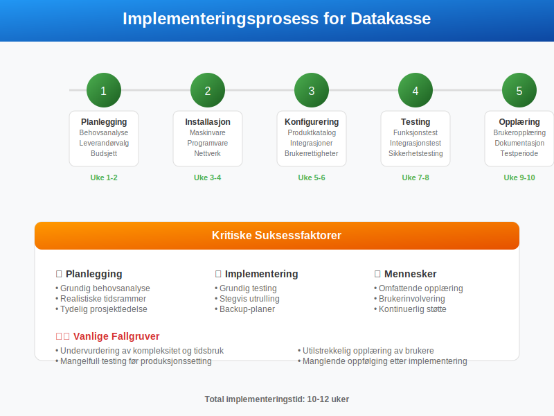
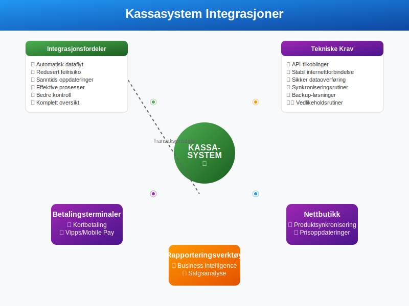
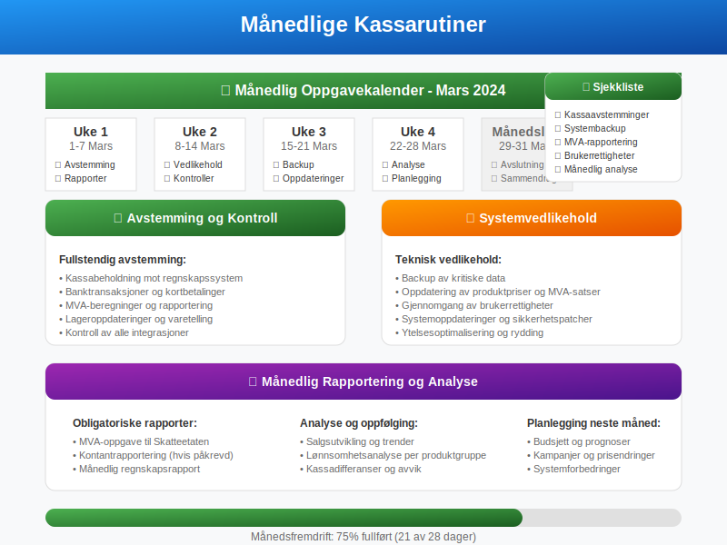
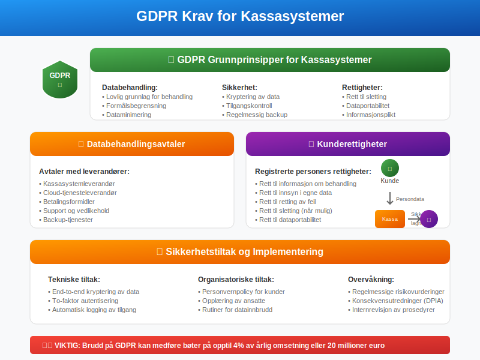
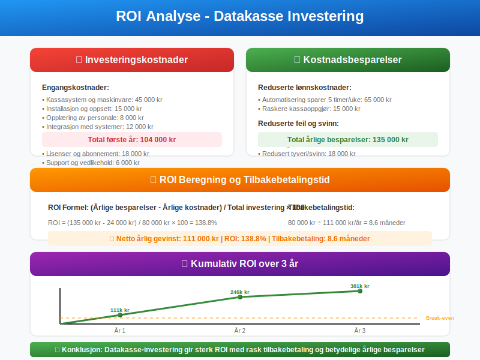
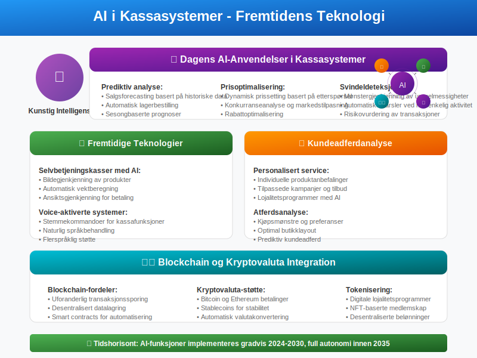
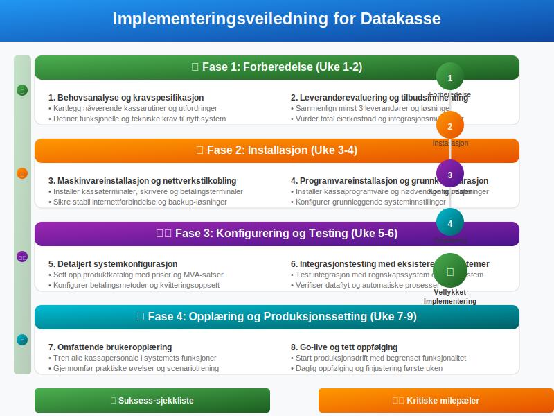

Datakasse er et elektronisk kassasystem som registrerer og dokumenterer alle kontantsalg i en bedrift. Dette systemet er essensielt for regnskapsføring og sikrer at alle transaksjoner blir korrekt registrert i henhold til bokføringsloven og bokføringsreglene.

Hva er en Datakasse?
En datakasse er et integrert system som kombinerer kassefunksjonalitet med regnskapsmessig dokumentasjon. Systemet sikrer at alle kontanttransaksjoner blir:
- Automatisk registrert med tidsstempel og transaksjonsnummer
- Dokumentert med kvitteringer og bilag
- Integrert med bedriftens regnskapssystem
- Rapportert til skattemyndighetene ved behov
- Kontrollert gjennom automatiske avstemminger
Forskjell fra Tradisjonell Kasse

| Aspekt | Tradisjonell Kasse | Datakasse |
|---|---|---|
| Registrering | Manuell | Automatisk |
| Dokumentasjon | Begrenset | Komplett |
| Integrasjon | Ingen | Regnskapssystem |
| Kontroll | Manuell | Automatisk |
| Rapportering | Tidkrevende | Automatisk |
| Feilrisiko | Høy | Lav |
Lovkrav og Forskrifter
Bokføringsloven og Datakasse
I henhold til bokføringsloven § 5 må alle forretningshendelser dokumenteres forsvarlig. For kontantsalg innebærer dette:
- Umiddelbar registrering av alle transaksjoner
- Sikker oppbevaring av transaksonsdata
- Sporbarhet tilbake til original transaksjon
- Integritet i dataene som ikke kan endres i ettertid
Kontantrapportering
Bedrifter med betydelig kontantomsetning må følge spesielle krav:

Rapporteringsplikt
- Månedlig rapportering til Skatteetaten for bedrifter over visse terskler
- Detaljert dokumentasjon av alle kontanttransaksjoner
- Elektronisk innsending gjennom Altinn
- Oppbevaring av data i minimum 5 år
Typer Kassasystemer
Tradisjonelle POS-systemer
Point of Sale (POS) systemer er den vanligste formen for datakasse:
- Integrert maskinvare med skjerm, tastatur og kvitteringsskriver
- Programvare for salgsregistrering og lagerføring med støtte for GTIN/EAN-koder
- Betalingsintegrasjon for kort og kontant
- Rapporteringsfunksjoner for salg og lager
Cloud-baserte Løsninger

Moderne kassasystemer er ofte cloud-baserte og tilbyr:
- Tilgang fra flere enheter (tablet, mobil, PC)
- Automatisk backup og datasikkerhet
- Sanntidsrapportering og analyse
- Automatiske oppdateringer og vedlikehold
- Integrasjon med regnskapssystemer og nettbutikker
Mobile Kassaløsninger
Mobile kassasystemer blir stadig mer populære:
- Tablet-baserte løsninger med enkelt grensesnitt
- Mobilbetaling gjennom Vipps, kort og kontant
- Portabilitet for markeder og events
- Lavere kostnader enn tradisjonelle systemer
Regnskapsføring med Datakasse
Automatisk Bilagsføring
Datakassen genererer automatisk regnskapsbilag for hver transaksjon:
Bilag nr: 2024-001234
Dato: 15.03.2024 14:32:15
Kunde: Kontantsalg
Beløp: 1.250,00 kr
MVA: 250,00 kr (25%)
Netto: 1.000,00 kr
Integrasjon med Regnskapssystem

Moderne datakasser integreres direkte med regnskapssystemer:
- Automatisk overføring av transaksjonsdata
- Korrekt kontering baspå produktkategorier
- MVA-håndtering i henhold til gjeldende satser
- Avstemming mot banktransaksjoner
Daglig Kassarapport
En typisk kassarapport inneholder:
| Element | Beskrivelse | Beløp |
|---|---|---|
| Åpningsbalanse | Kontanter ved start | 2.000,00 |
| Kontantsalg | Dagens kontantinntekter | 15.750,00 |
| Utbetalinger | Vekslepenger og uttak | -1.200,00 |
| Teoretisk slutt | Beregnet kassabeholdning | 16.550,00 |
| Faktisk telling | Opptalt kontantbeholdning | 16.550,00 |
| Differanse | Avvik som må undersøkes | 0,00 |
Den daglige kassarapporten danner grunnlaget for kasseoppgjør, som er den systematiske prosessen med å avstemme fysisk kassebeholdning mot registrerte transaksjoner. For løpende overvåking i løpet av dagen kan bedriften også benytte X-rapport, som er en mellomrapport som viser status på salg og kontanter uten å avslutte kassedagen. Dette sikrer nøyaktig regnskapsføring og god internkontroll av kontanthåndtering.
Implementering av Datakasse
Planleggingsfase

Før implementering må bedriften vurdere:
- Behov og krav basert på virksomhetens art
- Budsjett for innkjøp og drift
- Integrasjonsmuligheter med eksisterende systemer
- Opplæringsbehov for ansatte
- Teknisk infrastruktur og internettforbindelse
Valg av System
Vurderingskriterier
- Funksjonalitet: Dekker systemet alle nødvendige behov?
- Brukervennlighet: Er systemet intuitivt for ansatte?
- Integrasjon: Kan det kobles til regnskapssystem?
- Support: Tilbys god teknisk støtte?
- Kostnad: Er total eierkostnad akseptabel?
- Skalerbarhet: Kan systemet vokse med bedriften?
Populære Leverandører i Norge
| Leverandør | Målgruppe | Styrker |
|---|---|---|
| Visma | SMB og enterprise | Sterk regnskapsintegrasjon |
| 24SevenOffice | Små bedrifter | Enkel implementering |
| Tripletex | Regnskapsførere | Komplett økonomisystem |
| iZettle/PayPal | Små butikker | Mobilfokus og enkelt oppsett |
| Shopify POS | Detaljhandel | E-handel integrasjon |
Oppsett og Konfigurering
Grunnleggende Konfigurasjon
- Produktkatalog med priser og MVA-satser
- Betalingsmetoder (kontant, kort, Vipps)
- Kvitteringsoppsett med bedriftsinformasjon
- Brukerrettigheter og tilgangskontroll
- Regnskapskontering for automatisk bilagsregistrering
Integrasjonsoppsett

- Regnskapssystem: Automatisk overføring av transaksjoner
- Lagersystem: Sanntids lageroppdatering
- Nettbutikk: Synkronisering av produkter og priser
- Betalingsterminaler: Sømløs kortbetaling
- Rapporteringsverktøy: Business intelligence og analyse
Drift og Vedlikehold
Daglige Rutiner
Åpning av Kasse
- Kontroll av kassabeholdning mot forrige dags rapport
- Registrering av åpningsbalanse
- Systemsjekk av alle funksjoner
- Kvitteringspapir og forbruksmateriell
Stenging av Kasse
- Kassaoppgjør med telling av kontanter
- Utskrift av daglig kassarapport
- Avstemming mot systemets beregninger
- Sikker oppbevaring av kontanter og rapporter
Månedlige Oppgaver

- Fullstendig avstemming mot regnskapssystem
- Kontroll av alle integrasjoner
- Backup av kritiske data
- Oppdatering av produktpriser og MVA-satser
- Gjennomgang av brukerrettigheter
Feilsøking og Support
Vanlige Problemer
| Problem | Årsak | Løsning |
|---|---|---|
| Systemtreg | Lav internettforbindelse | Sjekk nettverksstatus |
| Kvittering printer ikke | Tomt papir/teknisk feil | Bytt papir/restart printer |
| Integrasjon fungerer ikke | API-problemer | Kontakt leverandør |
| Kassadifferanse | Menneskelig feil | Gjennomgå transaksjoner |
| Systemkrasj | Programvarefeil | Restart og kontakt support |
Sikkerhet og Datavern
Datasikkerhet
Datakasser håndterer sensitive finansielle data og krever robust sikkerhet:
- Kryptering av alle data i transit og hvile
- Tilgangskontroll med sterke passord og to-faktor autentisering
- Regelmessig backup til sikre lokasjoner
- Oppdateringer av sikkerhetsprogramvare
- Logging av alle systemaktiviteter
GDPR-compliance

Kassasystemer må følge GDPR-krav:
- Databehandlingsavtaler med leverandører
- Personvernpolicy for kundedata
- Rett til sletting av personopplysninger
- Dataportabilitet ved systemskifte
- Sikkerhetstiltak mot datainnbrudd
Fysisk Sikkerhet
- Sikker plassering av kassaterminaler
- Låsbare skuffer for kontantoppbevaring
- Overvåkning med kameraer
- Begrenset tilgang til kassaområdet
- Rutiner for kontanthåndtering
Økonomiske Fordeler
Kostnadsbesparelser

Implementering av datakasse gir flere økonomiske fordeler:
- Redusert tidsbruk på manuelle registreringer
- Færre feil i regnskapsføring
- Automatiserte prosesser reduserer lønnskostnader
- Bedre kontroll reduserer svinn og tyveri
- Raskere rapportering til skattemyndighetene
Forbedret Kontroll
Sanntidsrapportering
- Øyeblikkelig innsikt i salgsutvikling
- Automatiske varsler ved uregelmessigheter
- Detaljert analyse av salgsdata
- Sammenligning med historiske data
- Prognoser basert på trender
Lageroptimalisering
- Automatisk lageroppdatering ved salg
- Lavlager-varsler for kritiske produkter
- Analyse av produktpopularitet
- Optimalisering av innkjøp
- Reduksjon av lagerkostnader
Fremtidige Utviklingstrender
Kunstig Intelligens

AI-teknologi vil revolusjonere kassasystemer:
- Prediktiv analyse for salgsforecasting
- Automatisk prisoptimalisering basert på etterspørsel
- Kundeadferdanalyse for personalisert service
- Svindeldeteksjon gjennom mønstergjenkjenning
- Automatisert lagerbestilling basert på AI-algoritmer
Kontaktløse Løsninger
- Selvbetjeningskasser med AI-gjenkjenning
- Mobile betalinger uten fysisk interaksjon
- QR-kode baserte bestillings- og betalingssystemer
- Biometrisk autentisering for sikkerhet
- Voice-aktiverte kassafunksjoner
Blockchain og Kryptovaluta
- Blockchain-basert transaksjonssporing
- Kryptovaluta-støtte for alternative betalinger
- Smart contracts for automatiserte prosesser
- Desentralisert datalagring for økt sikkerhet
- Tokenisering av lojalitetsprogrammer
Implementeringsveiledning
Steg-for-Steg Prosess

Fase 1: Forberedelse (Uke 1-2)
- Behovsanalyse og kravspesifikasjon
- Leverandørevaluering og tilbudsinnhenting
- Budsjettgodkjenning og kontraktsinngåelse
- Prosjektplan med tidslinjer og milepæler
Fase 2: Installasjon (Uke 3-4)
- Maskinvareinstallasjon og nettverkstilkobling
- Programvareinstallasjon og grunnkonfigurasjon
- Integrasjonstesting med eksisterende systemer
- Datamigrering fra gamle systemer
Fase 3: Testing (Uke 5-6)
- Funksjonstesting av alle kassafunksjoner
- Integrasjonstesting med regnskapssystem
- Ytelsestesting under normal belastning
- Sikkerhetstesting av alle tilgangspunkter
Fase 4: Opplæring (Uke 7-8)
- Administratoropplæring for systemansvarlige
- Brukeropplæring for kassapersonale
- Dokumentasjon av prosedyrer og rutiner
- Testperiode med begrenset bruk
Fase 5: Produksjonssetting (Uke 9)
- Go-live med full funksjonalitet
- Tett oppfølging første dagene
- Finjustering basert på brukererfaring
- Evaluering av implementeringen
Suksessfaktorer
Kritiske Elementer
- Ledelsesforankring og tydelig kommunikasjon
- Grundig planlegging og realistiske tidsrammer
- Kompetent prosjektledelse med erfaring
- Aktiv brukerinvolvering gjennom hele prosessen
- Tilstrekkelig opplæring og dokumentasjon
Vanlige Fallgruver
- Undervurdering av kompleksitet og tidsbruk
- Mangelfull testing før produksjonssetting
- Utilstrekkelig opplæring av brukere
- Dårlig kommunikasjon med interessenter
- Manglende oppfølging etter implementering
Konklusjon
Datakasse er et essensielt verktøy for moderne bedrifter som håndterer kontantsalg. Systemet sikrer ikke bare overholdelse av lovkrav, men gir også betydelige operasjonelle fordeler gjennom automatisering og bedre kontroll.
Viktigste Fordeler
- Automatisk regnskapsføring reduserer feil og tidsbruk
- Lovpålagt dokumentasjon sikres automatisk
- Bedre kontroll over kontantstrømmer og lager
- Integrerte løsninger forenkler daglige rutiner
- Sanntidsrapportering gir bedre beslutningsgrunnlag
Anbefalinger
For bedrifter som vurderer implementering av datakasse:
- Start med grundig behovsanalyse
- Evaluer flere leverandører og løsninger
- Planlegg implementeringen nøye
- Invester i god opplæring av personalet
- Følg opp systemet jevnlig for optimal ytelse
Med riktig valg og implementering vil en datakasse være en verdifull investering som styrker bedriftens regnskapsrutiner og gir bedre kontroll over den finansielle driften.